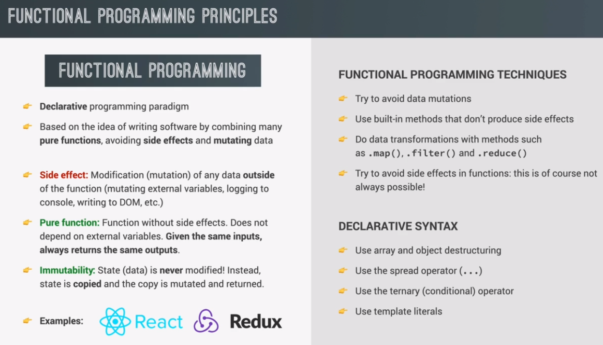

2 ways to write code (paradigms)
whenever we write imperative code, we basically need to explain to the computer how to do a certain things. So, basically, we need to explain every single step that the computer needs to follow in order to achieve a certain result.
here in this code example, we are trying to double the R array. And so, this loop that I have here, is a purely imperative way of writing that. So, here we are telling the computer step by step, to create an empty array to create a counter that starts at zero, then to increase that counter until we reach the length of the original array, and then how exactly to store the new result in each new position of the array.
const arr = [2, 4, 6, 8];
const doubled = [];
for (let i = 0; i < arr.length; i++)
doubled[i] = arr[i] = 2;
when we write declarative code, we simply describe the way that the computer should achieve a certain result. But the how it should do it, so basically, the step by step instructions, they get abstracted away, so we do not care about them.
this is how we do it in the declarative way. So, we have R array, and then we simply tell JavaScript, that it should map the values in the R array to a new array, and each of these values should be multiplied by two. And so, if you compare this code example, with the one on the left, then you will really see that in this example, all we are doing is describing the way that the computer should achieve the result that we are looking for. We are simply telling it what to do, which in this case, is to simply map the original array onto a new array and doubling all the elements.
all these super detailed steps that we have on the left side, like creating an empty array and initializing a counter, all of these steps have been abstracted away, because we don't really care about them, all right? And this is pretty important to understand, because more and more this is how modern JavaScript code is actually written. So, the difference between imperative and declarative is not just some theoretical difference. So, the declarative paradigm is actually a really big and popular programming paradigm, which has even given rise to a sub paradigm called, functional programming.
const arr = [2, 4, 6, 8];
const doubled = arr.map(n => n * 2);
a declarative paradigm, which is based on the idea of writing software, simply by combining multiple so called pure functions, while avoiding side effects and mutating data.
This is the modern way of writing code.
a side effect is basically simply a modification of any data that's outside of a function. So, for example, mutating any variable that is external to the function is causing a side effect. So any variable that is outside of the scope of the function.
data does not only refer to variables, so for example, logging stuff to the console, or also changing something in the DOM, is also causing side effects.
a pure function, is a function without side effects. So, basically a function that does not mutate any external variables, and that does also not depend on any external variables.
if we give the same inputs to a pure function, it will always return the same output and again, that's because it does not depend on any external variables, and it also does not manipulate them.
And finally, if we look again, at our definition here, we also see that functional programming is about avoiding mutating data, and we do that by using something called immutability.
in functional programming, state, which also means basically data is never modified.
let's say that we have some application, and we have an object there to keep track of all the data that we need in an application. And so that we usually called state, and so again, in functional programming, that state is never modified. Instead, what we will do is to copy that object, so that state, and then it is that copy that is mutated, and can then be returned, but the original state is never touched, okay?
that's what it means for the state being immutable, and the big upside of immutability is that, it makes it so much easier to keep track of how the data flows through our entire application.
ultimately, that will allow us to write better code with less bugs, and code that is also more readable, which overall, is the entire goal of using functional programming in the first place.
another thing that you can do is to always prefer, built in methods or functions that do not produce side effects over the ones that do, and this is really important for data transformations.
whenever you want to do that, you should use a method such as Map, Filter and Reduce.
this is the functional and modern way of doing data transformations, and many times, this is actually the first contact that many people have, with functional programming. So, Map, Filter and Reduce are actually present in all functional programming languages, and they are very important to implement a functional code into more declarative code in our code.
now to finish, let's come back to declarative syntax, because functional programming is only a part of using and writing declarative code. So, in order to write code that is more declarative, you should use array and object destructuring whenever that's possible.
You should also use the spread operator, the ternary operator, and also template literals whenever that is possible, because if you think about it, then all of these four ways of writing code, actually makes the code more declarative.
these operators are more about telling the code what to do, and not exactly the steps that it should take
